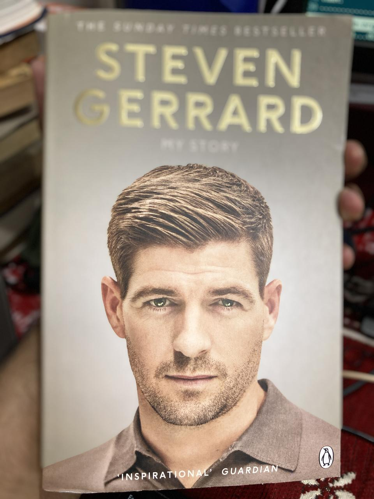

For a lifelong Liverpool F.C fan, this is the perfect gift.
I found a poem inside it. My friend Harish, a proud Chelsea F.C fan wrote this
poem. He understands football better than anyone else. Football is mostly
happiness, sometimes sorrow, triumphs and heartbreaks. It is freedom. It is a
religion without animosity. We all love the game and the game loves us
back. Football is love!

Do you remember? Is it a blur? Reminisce,
As you sailed through the highs and the lows,
Through the soaring peaks and the infinte abyss,
Darkness, the roll of a dice, chaos, the fall of a domino.
The words of a special anthem echoes
Softly, just like it did in Turkey and Madrid
A wave of red, devoured the green meadows
Millions of souls dreamt, breathless, achieve it they did!
That echo is now a roar, your ears hurt
Do not resist, for it is a beacon of hope
Pull up your socks, be ready and be alert
For even in the face of defeat, you will kop(e)
The walk is now a jog, the road to salvation
The time to show how much you've grown
A fallen tear, broken heart, a whisper, a realisation
For even in lucid dreams, you'll never walk alone.
by Harish Ramachandran
YNWA!